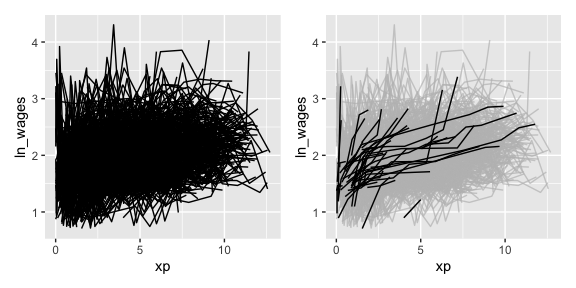

brolgar helps you browse over longitudinal data graphically and analytically in R, by providing tools to:
- Efficiently explore raw longitudinal data
- Calculate features (summaries) for individuals
- Evaluate diagnostics of statistical models
This helps you go from the “plate of spaghetti” plot on the left, to “interesting observations” plot on the right.

Installation
Install from GitHub with:
# install.packages("remotes")
remotes::install_github("njtierney/brolgar")Or from the R Universe with:
# Enable this universe
options(repos = c(
njtierney = 'https://njtierney.r-universe.dev',
CRAN = 'https://cloud.r-project.org')
)
# Install some packages
install.packages('brolgar')Using brolgar: We need to talk about data
There are many ways to describe longitudinal data - from panel data, cross-sectional data, and time series. We define longitudinal data as:
individuals repeatedly measured through time.
The tools and workflows in brolgar are designed to work with a special tidy time series data frame called a tsibble. We can define our longitudinal data in terms of a time series to gain access to some really useful tools. To do so, we need to identify three components:
- The key variable in your data is the identifier of your individual.
- The index variable is the time component of your data.
- The regularity of the time interval (index). Longitudinal data typically has irregular time periods between measurements, but can have regular measurements.
Together, time index and key uniquely identify an observation.
The term key is used a lot in brolgar, so it is an important idea to internalise:
The key is the identifier of your individuals or series
Identifying the key, index, and regularity of the data can be a challenge. You can learn more about specifying this in the vignette, “Longitudinal Data Structures”.
The wages data
The wages data is an example dataset provided with brolgar. It looks like this:
wages
#> # A tsibble: 6,402 x 9 [!]
#> # Key: id [888]
#> id ln_wages xp ged xp_since_ged black hispanic high_grade
#> <int> <dbl> <dbl> <int> <dbl> <int> <int> <int>
#> 1 31 1.49 0.015 1 0.015 0 1 8
#> 2 31 1.43 0.715 1 0.715 0 1 8
#> 3 31 1.47 1.73 1 1.73 0 1 8
#> 4 31 1.75 2.77 1 2.77 0 1 8
#> 5 31 1.93 3.93 1 3.93 0 1 8
#> 6 31 1.71 4.95 1 4.95 0 1 8
#> 7 31 2.09 5.96 1 5.96 0 1 8
#> 8 31 2.13 6.98 1 6.98 0 1 8
#> 9 36 1.98 0.315 1 0.315 0 0 9
#> 10 36 1.80 0.983 1 0.983 0 0 9
#> # ℹ 6,392 more rows
#> # ℹ 1 more variable: unemploy_rate <dbl>And under the hood, it was created with the following setup:
wages <- as_tsibble(x = wages,
key = id,
index = xp,
regular = FALSE)Here as_tsibble() takes wages, and a key, and index, and we state the regular = FALSE (since there are not regular time periods between measurements). This turns the data into a tsibble object - a powerful data abstraction made available in the tsibble package by Earo Wang, if you would like to learn more about tsibble, see the official package documentation or read the paper.
Efficiently exploring longitudinal data
Exploring longitudinal data can be challenging when there are many individuals. It is difficult to look at all of them!
You often get a “plate of spaghetti” plot, with many lines plotted on top of each other. You can avoid the spaghetti by looking at a random subset of the data using tools in brolgar.
sample_n_keys()
In dplyr, you can use sample_n() to sample n observations, or sample_frac() to look at a fraction of observations.
brolgar builds on this providing sample_n_keys() and sample_frac_keys(). This allows you to take a random sample of n keys using sample_n_keys(). For example:
set.seed(2019-7-15-1300)
wages %>%
sample_n_keys(size = 5) %>%
ggplot(aes(x = xp,
y = ln_wages,
group = id)) +
geom_line()
And what if you want to create many of these plots?
Clever facets: facet_sample()
facet_sample() allows you to specify the number of keys per facet, and the number of facets with n_per_facet and n_facets.
By default, it splits the data into 12 facets with 5 per facet:
set.seed(2019-07-23-1937)
ggplot(wages,
aes(x = xp,
y = ln_wages,
group = id)) +
geom_line() +
facet_sample()Under the hood, facet_sample() is powered by sample_n_keys() and stratify_keys().
You can see more facets (e.g., facet_strata()) and data visualisations you can make in brolgar in the Visualisation Gallery.
Finding features in longitudinal data
Sometimes you want to know what the range or a summary of a variable for each individual. We call these summaries features of the data, and they can be extracted using the features function, from fabletools.
For example, if you want to answer the question “What is the summary of wages for each individual?”. You can use features() to find the five number summary (min, max, q1, q3, and median) of ln_wages with feat_five_num:
wages %>%
features(ln_wages,
feat_five_num)
#> # A tibble: 888 × 6
#> id min q25 med q75 max
#> <int> <dbl> <dbl> <dbl> <dbl> <dbl>
#> 1 31 1.43 1.48 1.73 2.02 2.13
#> 2 36 1.80 1.97 2.32 2.59 2.93
#> 3 53 1.54 1.58 1.71 1.89 3.24
#> 4 122 0.763 2.10 2.19 2.46 2.92
#> 5 134 2.00 2.28 2.36 2.79 2.93
#> 6 145 1.48 1.58 1.77 1.89 2.04
#> 7 155 1.54 1.83 2.22 2.44 2.64
#> 8 173 1.56 1.68 2.00 2.05 2.34
#> 9 206 2.03 2.07 2.30 2.45 2.48
#> 10 207 1.58 1.87 2.15 2.26 2.66
#> # ℹ 878 more rowsThis returns the id, and then the features.
There are many features in brolgar - these features all begin with feat_. You can, for example, find those whose ln_wages values only increase or decrease with feat_monotonic:
wages %>%
features(ln_wages, feat_monotonic)
#> # A tibble: 888 × 5
#> id increase decrease unvary monotonic
#> <int> <lgl> <lgl> <lgl> <lgl>
#> 1 31 FALSE FALSE FALSE FALSE
#> 2 36 FALSE FALSE FALSE FALSE
#> 3 53 FALSE FALSE FALSE FALSE
#> 4 122 FALSE FALSE FALSE FALSE
#> 5 134 FALSE FALSE FALSE FALSE
#> 6 145 FALSE FALSE FALSE FALSE
#> 7 155 FALSE FALSE FALSE FALSE
#> 8 173 FALSE FALSE FALSE FALSE
#> 9 206 TRUE FALSE FALSE TRUE
#> 10 207 FALSE FALSE FALSE FALSE
#> # ℹ 878 more rowsYou can read more about creating and using features in the Finding Features vignette. You can also see other features for time series in the feasts package.
Linking individuals back to the data
Once you have created these features, you can join them back to the data with a left_join, like so:
wages %>%
features(ln_wages, feat_monotonic) %>%
left_join(wages, by = "id") %>%
ggplot(aes(x = xp,
y = ln_wages,
group = id)) +
geom_line() +
gghighlight(increase)
#> Warning: Tried to calculate with group_by(), but the calculation failed.
#> Falling back to ungrouped filter operation...
#> label_key: id
#> Too many data series, skip labeling
Other helper functions
Finding the number of observations per key.
You can also use n_obs() inside features to return the number of observations for each key:
wages %>%
features(ln_wages, n_obs)
#> # A tibble: 888 × 2
#> id n_obs
#> <int> <int>
#> 1 31 8
#> 2 36 10
#> 3 53 8
#> 4 122 10
#> 5 134 12
#> 6 145 9
#> 7 155 11
#> 8 173 6
#> 9 206 3
#> 10 207 11
#> # ℹ 878 more rowsThis returns a dataframe, with one row per key, and the number of observations for each key.
This could be further summarised to get a sense of the patterns of the number of observations:

Further Reading
brolgar provides other useful functions to explore your data, which you can read about in the exploratory modelling and Identify Interesting Observations vignettes. As a taster, here are some of the figures you can produce:
#> Warning: Tried to calculate with group_by(), but the calculation failed.
#> Falling back to ungrouped filter operation...
#> label_key: id
#> Too many data series, skip labeling
#> Warning in left_join(., wages, by = "id"): Detected an unexpected many-to-many relationship between `x` and `y`.
#> ℹ Row 1 of `x` matches multiple rows in `y`.
#> ℹ Row 1077 of `y` matches multiple rows in `x`.
#> ℹ If a many-to-many relationship is expected, set `relationship =
#> "many-to-many"` to silence this warning.
Related work
One of the sources of inspiration for this work was the lasangar R package by Bryan Swihart (and paper).
For even more expansive time series summarisation, make sure you check out the feasts package (and talk!).
Contributing
Please note that the brolgar project is released with a Contributor Code of Conduct. By contributing to this project, you agree to abide by its terms.
A Note on the API
This version of brolgar was been forked from tprvan/brolgar, and has undergone breaking changes to the API.
Acknowledgements
Thank you to Mitchell O’Hara-Wild and Earo Wang for many useful discussions on the implementation of brolgar, as it was heavily inspired by the feasts package from the tidyverts. I would also like to thank Tania Prvan for her valuable early contributions to the project, as well as Stuart Lee for helpful discussions. Thanks also to Ursula Laa for her feedback on the package structure and documentation.